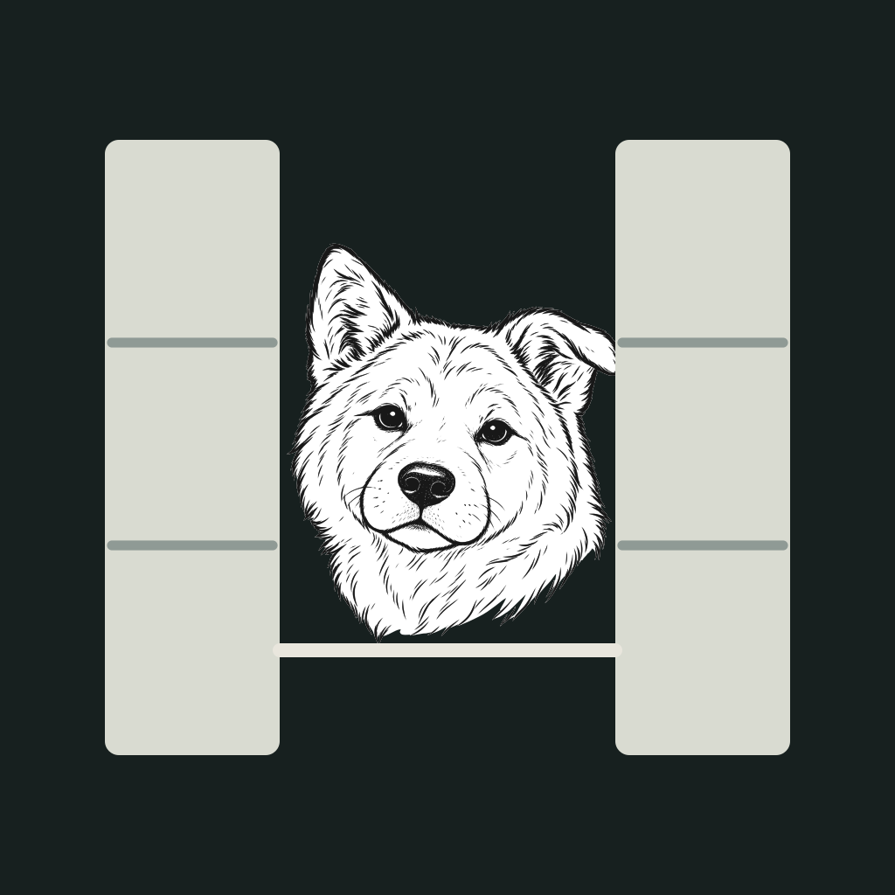
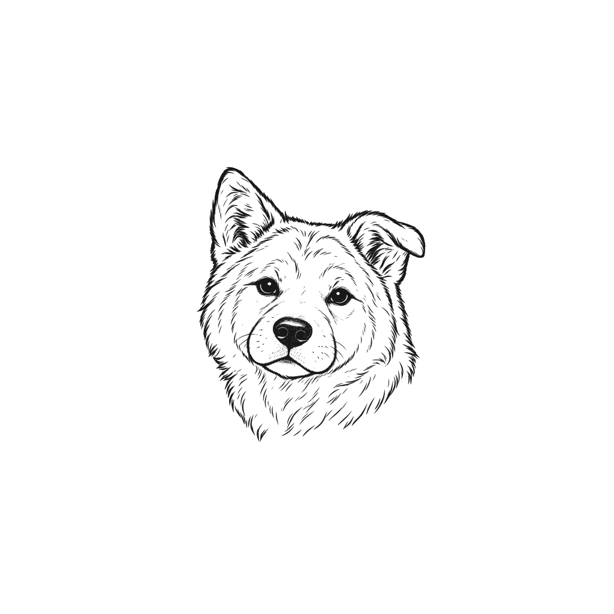
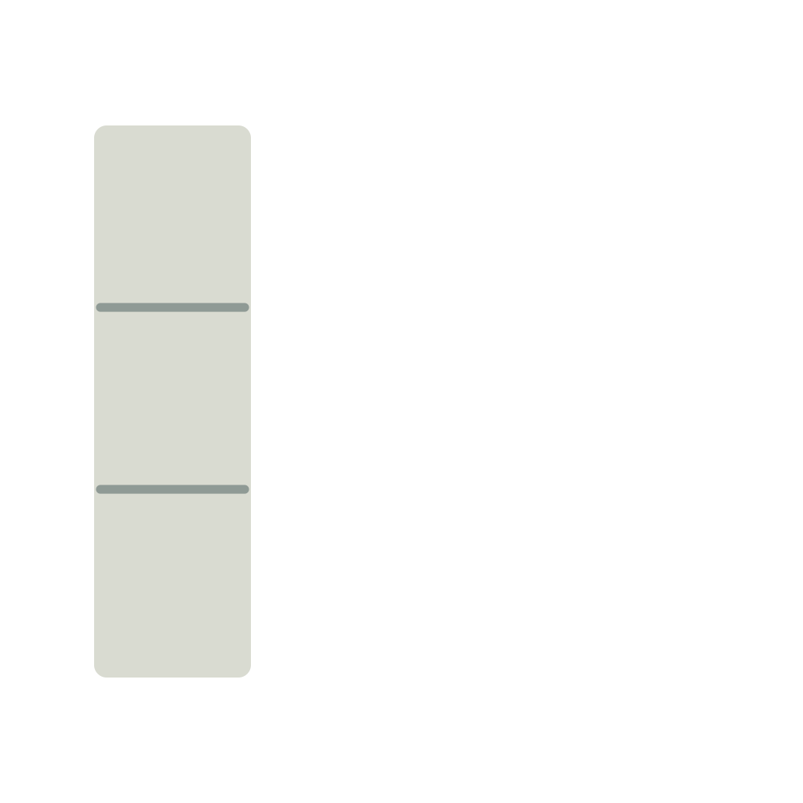
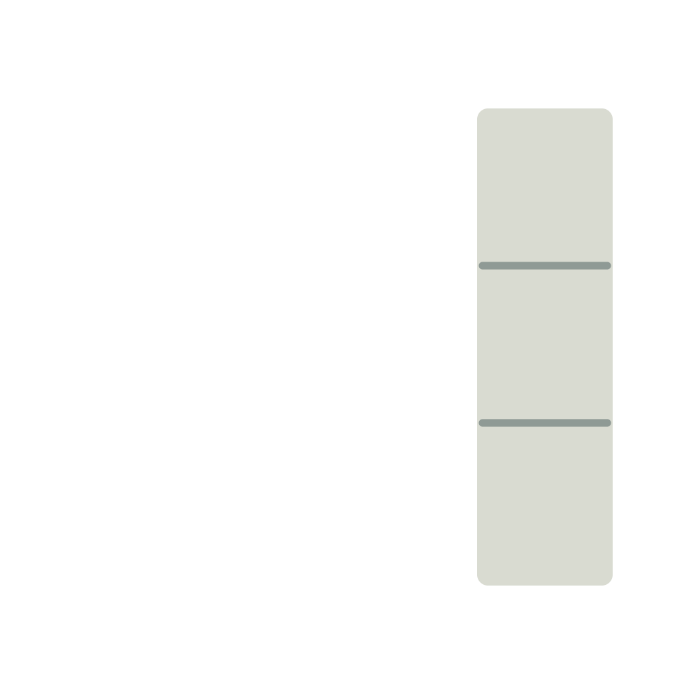

Shoji · Vector asset delivery
Same Hachi. Scalable artwork.
Quiet Balance C. Face-only Open Shoji icon. Needs-you cards only. Genuine vectors and aligned icon layers prepared for native integration.
Vector icon reference
Layered production delivery
Reference composition only. Import the separate foreground layers into Icon Composer; set the background and glass treatment there.
Source and vector trace
No embedded raster in SVG Approved source
Approved source Vector delivery
Vector deliveryThe trace retains the expression and fur marks. The PDF carries the same vector artwork for an asset catalog.
Zoom and badge checks
Sizes are points at 100%, scaled together like the app. Portrait: 32 pt, top 6 pt, trailing 38 pt. Both counts 1 and 999 must clear the existing status, badge and title.
75% zoomChecking…
!CLAUDE
auth-refactor-long-titleWaiting for you
1!CLAUDE
auth-refactor-long-titleWaiting for you
999100% zoomChecking…
!CLAUDE
auth-refactor-long-titleWaiting for you
1!CLAUDE
auth-refactor-long-titleWaiting for you
999200% zoomChecking…
!CLAUDE
auth-refactor-long-titleWaiting for you
1!CLAUDE
auth-refactor-long-titleWaiting for you
999Checking geometry…
Aligned Icon Composer layers
1024 × 1024 canvases. Native background, then Hachi, panels and lower rail. No baked glass, shadow or corner mask.
Background reference

Hachi · matte
Left panel
Right panelLower rail
Reference icon at 16–128 pt
This checks the vector silhouette. Native materials, appearances and 16 pt rendering still need Icon Composer validation.
128 pt
64 pt
32 pt
16 pt
Implementation is separate. HTML geometry cannot verify native glass ordering, hit targets, accessibility or Icon Composer materials. Those checks remain in the active coding handoff; this page is the durable visual specification.